Problem statement
…give homeowners and the operations team one clear, trustworthy view of their properties, bookings, operations and earnings, whether they're at a desk or on the go?
Role & responsibilities
As the Lead UX/UI Designer, I led the design of the platform end to end, from the first concept through to handoff to the developers. I ran the discovery workshops with stakeholders, shaped the information architecture for both platforms, and designed every screen in Figma.
Alongside the product work, I built the company's first design system and grew the design team around it. I onboarded new designers to the company, mentored and guided them through critiques and regular feedback, and made sure their work followed the same standards before anything reached development.
- Led design from concept to developer handoff
- Facilitated discovery workshops to find quick wins and prioritize features
- Ran A/B tests with real users on key interactions
- Built a live prototype with Claude for stakeholders and developers
- Built the company's first design system
- Onboarded, mentored and guided new designers
From workshops to a live prototype
- WorkshopsFound quick wins and prioritized features with stakeholders
- WireframesExplored structure for the web portal and mobile app
- A/B testingValidated key interactions with real users
- Live prototypeGenerated with Claude and shared with stakeholders and developers
- Design system & handoffComponents and high-fidelity designs in Figma, documented for development
Discovery workshops
I started with a series of workshops with the founders and the operations team. We mapped who uses the product and what each group needs day to day, listed every feature idea on the table, and sorted them by value and effort to separate the quick wins from the larger bets.
Two very different audiences came out of those sessions, so the product became two platforms built on one foundation:
- HomeownersMobile app: earnings, occupancy and concierge on the go
- Operations & partnersWeb portal: high-density analytics, inventory and financial reporting
The quick wins we agreed to ship first were a clear portfolio overview, live property status (ready, occupied, cleaning, maintenance), a bookings view and a direct line to the concierge team. Deeper financial tooling was prioritized for later.
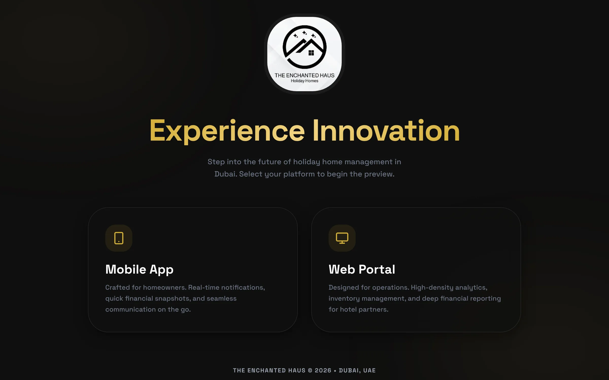
Wireframes
With the priorities agreed, I sketched low-fidelity wireframes for the portfolio overview, the properties list, the homeowner's mobile home screen and a short "Add Property" form. Keeping them low-fi let stakeholders focus on structure and content before any visual design, and it surfaced the two open questions we later took to A/B testing.
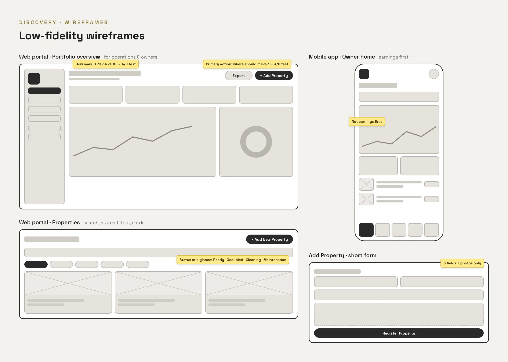
A/B testing with real users
Rather than settle design debates in meetings, I ran A/B tests with real users on the interactions that mattered most. Each test compared two versions of the same screen built from the live prototype.
Where should "Add Property" live?
Adding a new property is the action that grows the business, so it had to be easy to find. We compared a primary button in the page header with an entry in the sidebar navigation. The header button was the version that shipped: it read as the main action on the page, while the sidebar entry blended in with navigation.
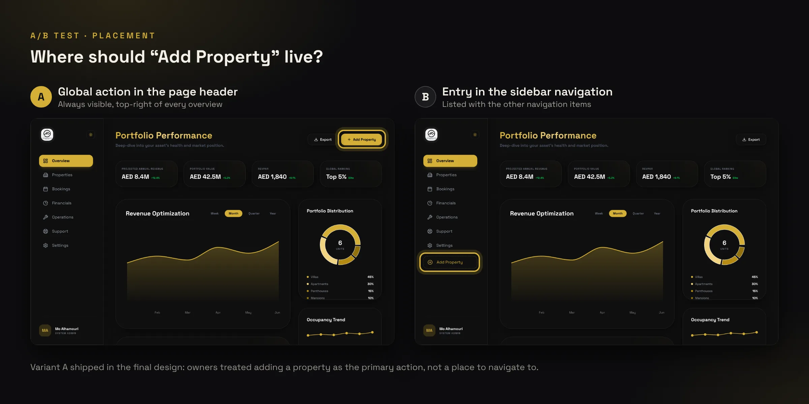
How much data should the dashboard show?
Stakeholders wanted every metric on the overview, while early feedback suggested users were scanning for only a few numbers. We compared four headline KPIs with trend charts against twelve KPIs above the fold. The focused version shipped, and the detailed operational metrics moved to the Financials and Operations pages.
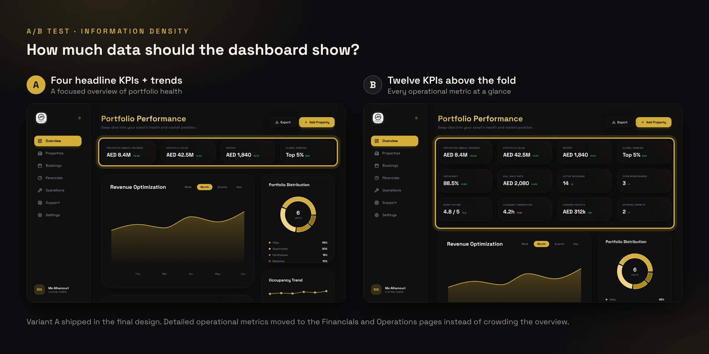
Research, Options & Trade-offs
What research revealed
Homeowners mostly asked the same few questions: how much they had earned, whether their property was occupied, and whether cleaning or maintenance had been done. Many of those questions arrived as calls and messages to the team. The surprise was that owners wanted fewer numbers, not more. They trusted a short summary and a clear status more than detailed tables.
Directions explored
- Option A: One responsive web app for owners and operations alike. Dropped: owners check in on the go and needed a quick, mobile-first view, while operations needed density.
- Option B: A single admin-style dashboard showing every metric to everyone. Dropped: in A/B testing the dense version made the key numbers harder to find.
- Option C: Two tailored platforms, a mobile app for homeowners and a web portal for operations, built on one shared design system. Chosen.
Trade-offs
To move fast, I communicated the experience through a live prototype generated with Claude instead of building a fully clickable Figma prototype for every flow, and kept Figma as the source of truth for components and final designs. Deeper financial features, such as bank-account connection and automated monthly statements, were scoped for later phases so the core experience could launch first.
Live prototype & developer handoff
I used Claude for rapid prototyping and generated a live, clickable mock-up of both platforms. Instead of describing interactions in documents, I shared the live prototype with stakeholders for sign-off and with the developers so they could see exactly how screens, states and transitions should look and behave.
Figma stayed the source of truth. I designed the components and high-fidelity screens there and documented the designs, including states, spacing and behavior notes, before handing them off to development.
The company's first design system
The Enchanted Haus had no shared design language, so I built its first design system: a gold-on-night color palette with clear status colors, a Space Grotesk type scale, and core components such as buttons, status badges, inputs, navigation, KPI cards and charts. I documented how and when to use each one.
The system was adopted by 3 designers and 8 developers. It kept the web portal and mobile app consistent and made development more efficient, and it gave the designers I onboarded a common starting point.
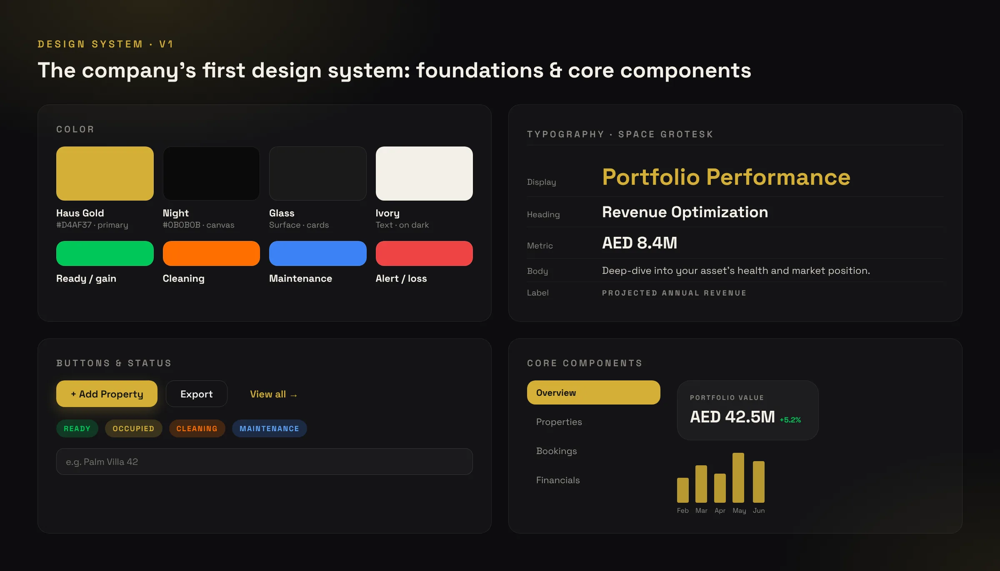
High-fidelity designs
The final designs pair a premium, hospitality-inspired look with practical clarity: a dark canvas, gold accents for primary actions and key numbers, and consistent status colors across both platforms.
Web Portal
Operations & partnersThe portfolio overview leads with four headline KPIs, revenue trends, portfolio distribution and occupancy, with "Add Property" always one click away.
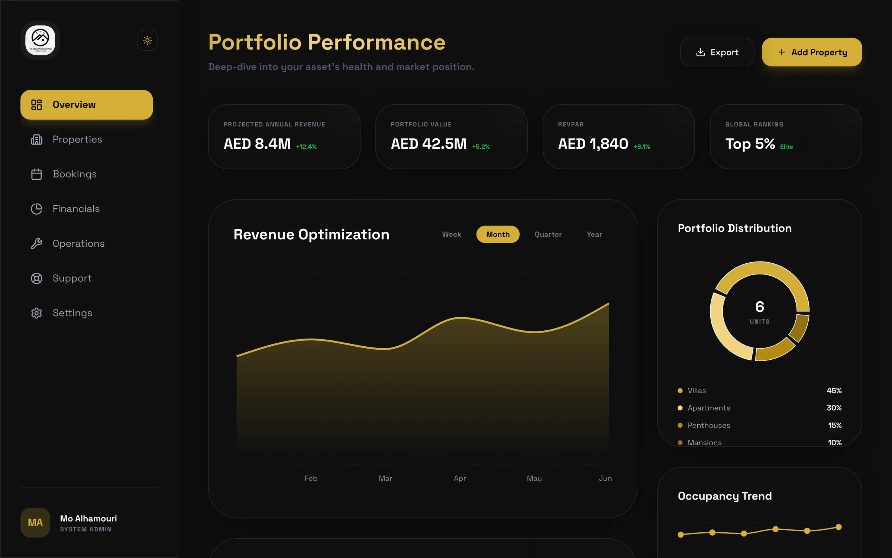
Properties are shown as cards with live status, monthly revenue and occupancy, with search and status filters. Adding a property takes three fields and photos.
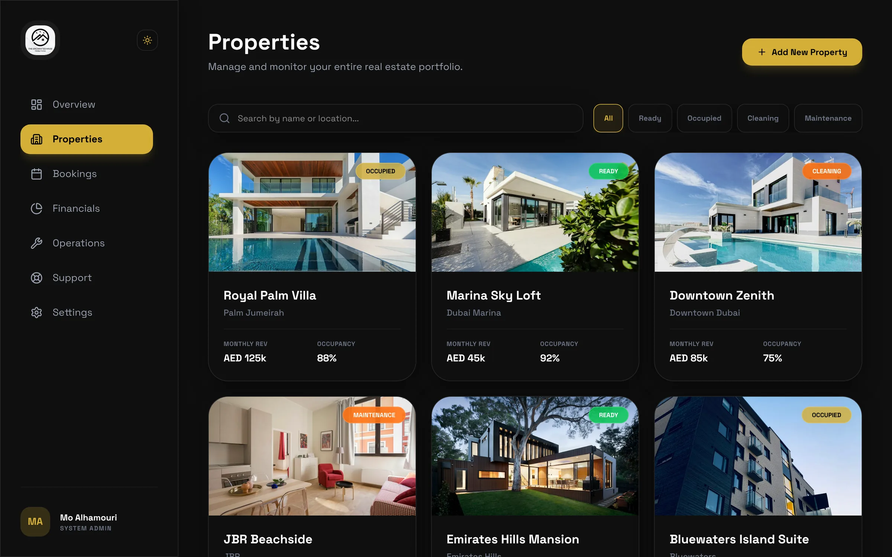
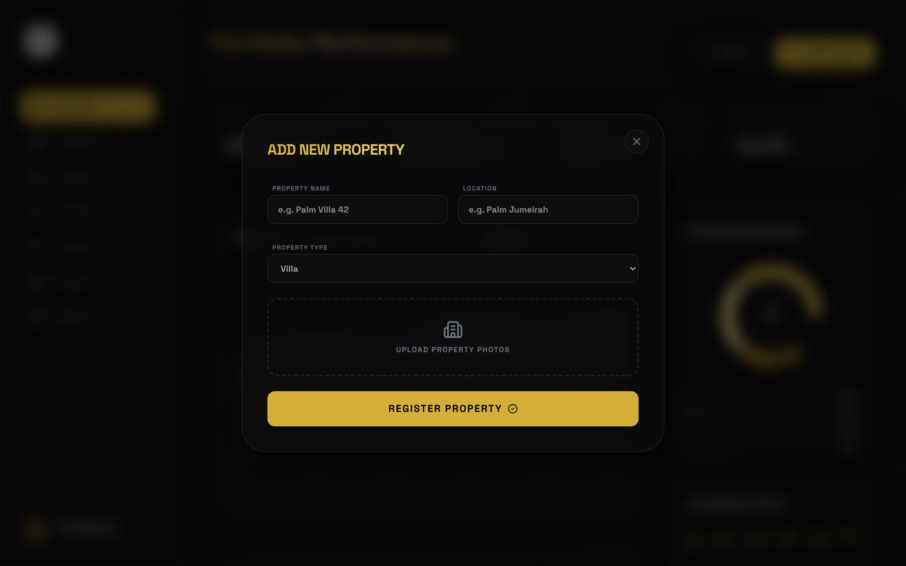
Bookings, Financials and Operations hold the detail that was moved off the overview: guest stays, profit and expense analysis, and real-time service status from the management team.
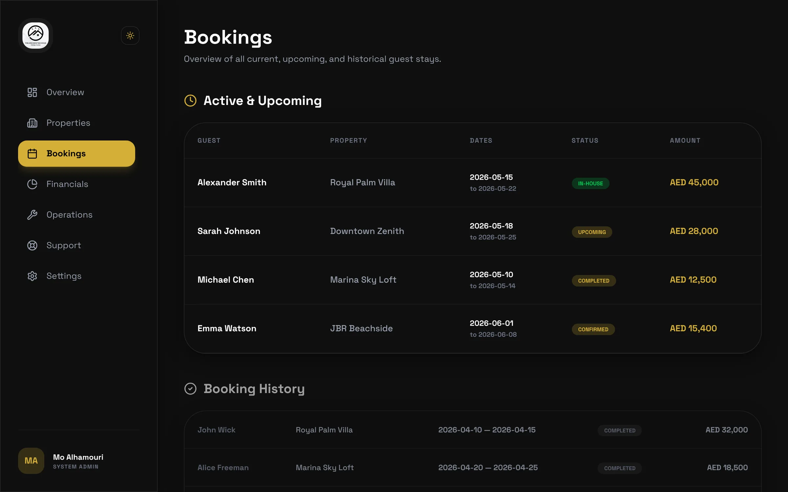
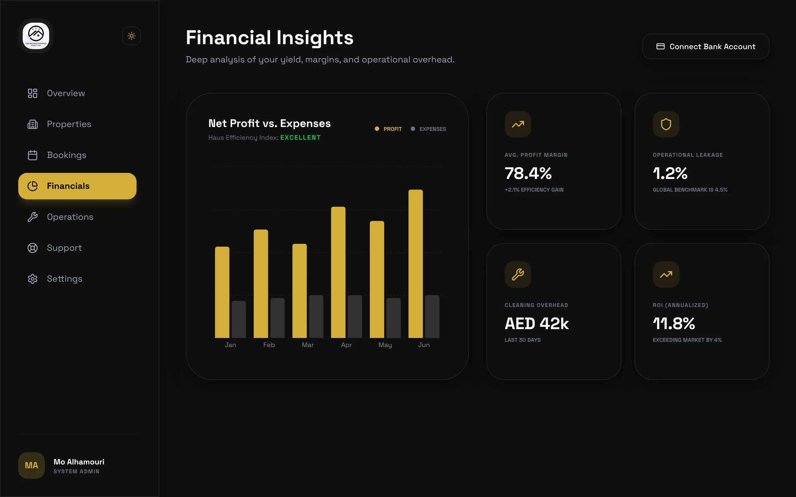
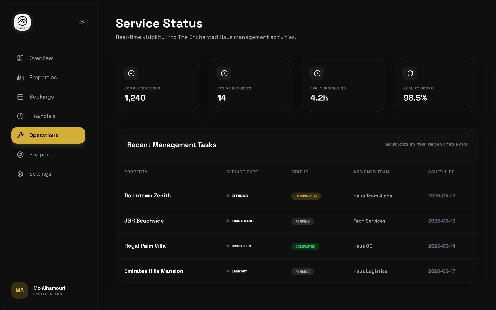
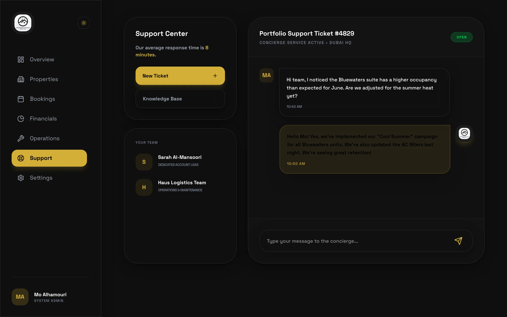
Mobile App
HomeownersFor homeowners, the app answers the most common questions first: net earnings, occupancy and ROI, followed by property status, bookings, operations updates, a concierge chat and finance.
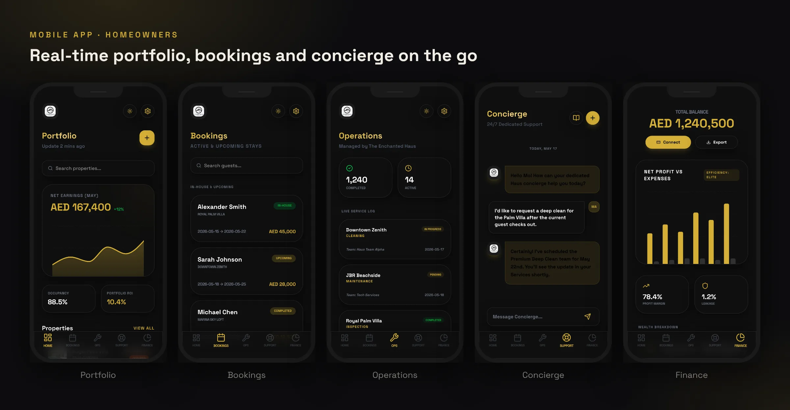
Results
Over 40 homeowners signed up at launch in January 2026. By June 2026, the company was receiving more than 100 owner inquiries a month, up from about 20 before the new platform.
How we measured: homeowner sign-up records at launch, and monthly inbound owner inquiries through the website and app forms.